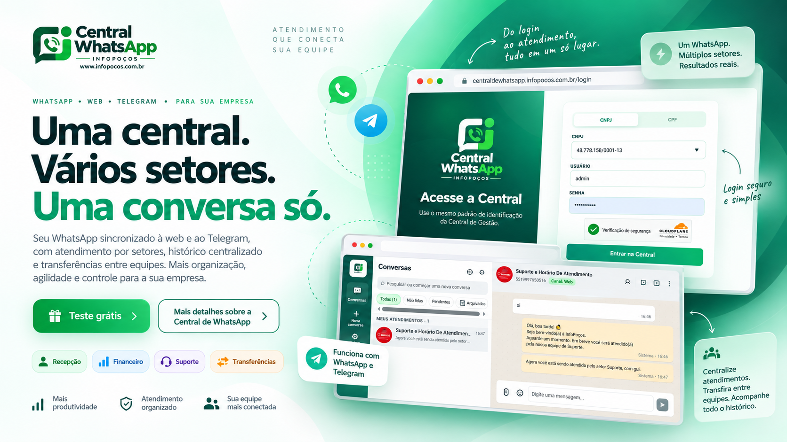
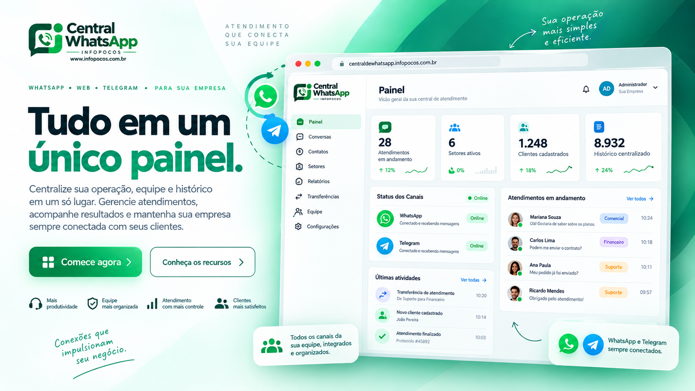
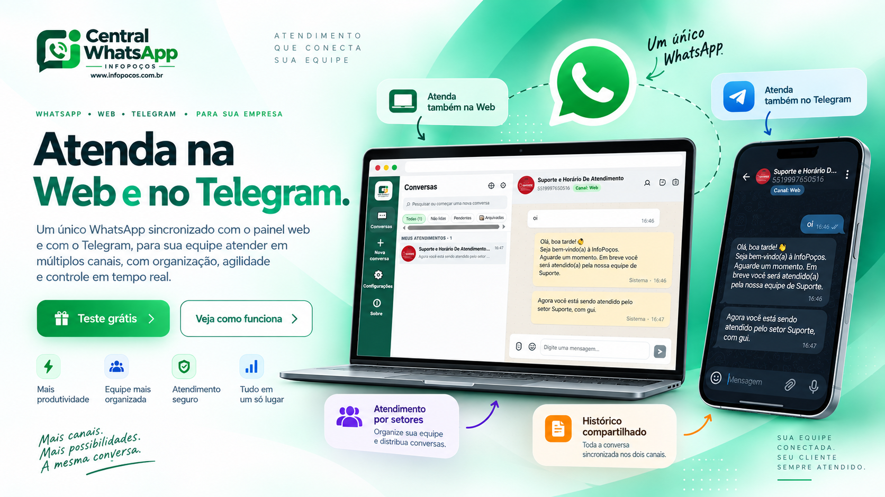
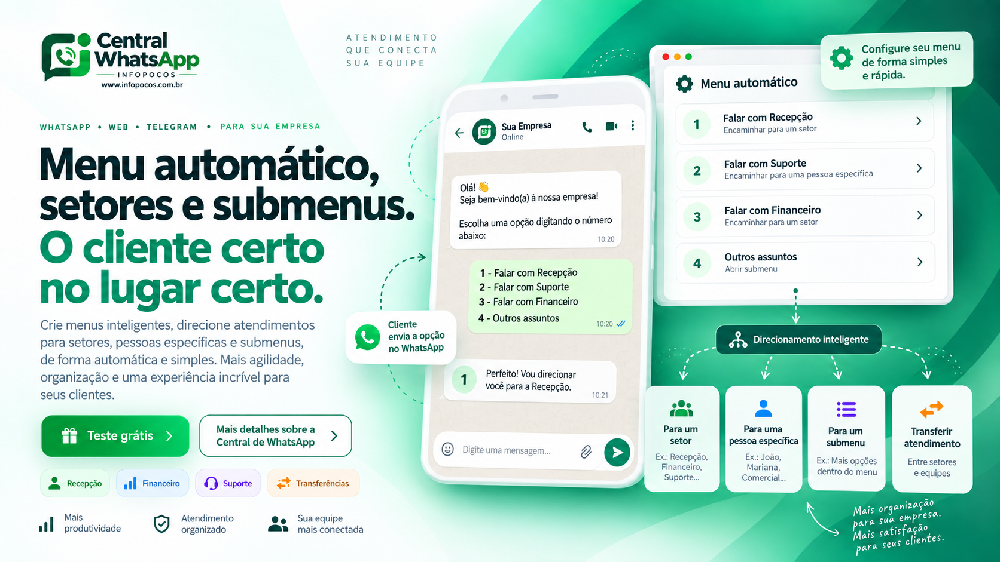

🖥️
Atenda na Web e no Telegram
Sincronize um único WhatsApp e responda pela Web e pelo Telegram, com a mesma conversa, o mesmo histórico e mais agilidade para sua equipe.
Organize sua equipe por setores, responda pela Web e pelo Telegram, transfira conversas com histórico e acompanhe tudo em um só lugar.

Mais do que um painel de mensagens, a Central de WhatsApp organiza atendimento, equipe, histórico, setores, automações e financeiro em uma única operação.
Sincronize um único WhatsApp e responda pela Web e pelo Telegram, com a mesma conversa, o mesmo histórico e mais agilidade para sua equipe.
Direcione clientes para setores, pessoas específicas ou submenus. Menos bagunça, mais rapidez e atendimento mais profissional.
Cadastre funcionários, clientes e setores, transfira atendimentos com histórico preservado e mantenha cada conversa no lugar certo.
Tenha uma visão clara do que está acontecendo: atendimentos em andamento, setores ativos, clientes cadastrados, canais online e últimas atividades.

Atenda pelo painel Web e pelo Telegram com total sincronização. Ideal para equipes que precisam mobilidade sem perder organização.

Leve cada cliente para o setor, pessoa ou submenu certo, com uma experiência mais rápida para quem chama e mais controle para quem atende.

Monte sua operação com funcionários, clientes identificados, setores personalizados e transferências entre colegas com o histórico sempre mantido.
Acompanhe pagamentos, tarifa do Mercado Pago, valor líquido, históricos e renovação de clientes sem precisar sair da própria Central.
Gere seu teste grátis, veja como o sistema funciona por dentro e descubra como a sua equipe pode atender melhor, com mais organização, rapidez e controle.